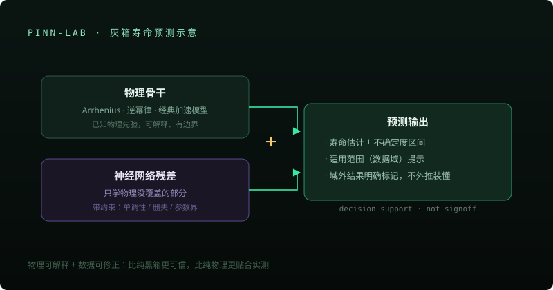

Physics-Informed ML
灰箱 PINN 寿命预测工作台
回答一个问题：测出来的应力数据，外推到使用工况能活多久、有多可信。物理骨干 + NN 残差 + 不确定度 + 域检查，输出永远是 diagnostic。


为什么不做纯黑箱
寿命外推是可靠性里最危险的环节——黑箱模型在数据域外会给出自信的错误答案。 让物理规律决定方向、神经网络只做局部修正，是把「能不能外推」变成可回答问题的工程折中。
方向与价值
可靠性工程师的核心问题是外推：加速应力下的几十小时数据，能说明使用工况下的十年吗？这个工作台把经典加速模型做物理骨干、神经网络只学习残差修正，预测永远附带不确定度区间与适用范围提示。
红线：预测是工程决策支持，不替代签核；适用范围之外的结果明确标记，不让模型假装知道它不知道的事。